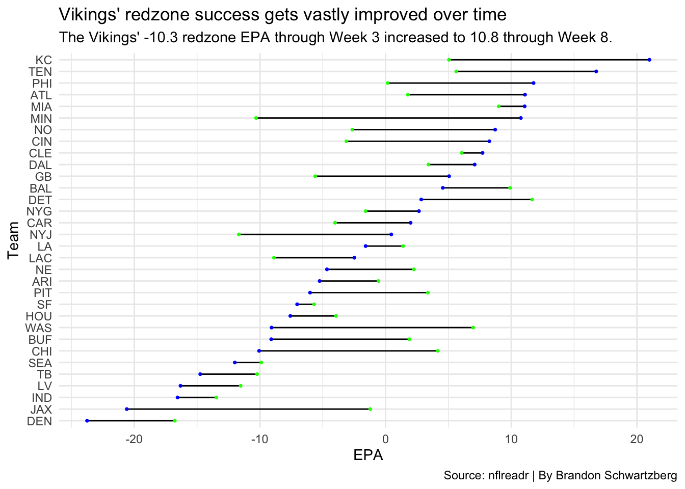

Code
library(tidyverse)
library(nflreadr)
library(ggalt)Brandon Schwartzberg
October 31, 2023
Load the tidyverse and NFL reader package.
Load 2022’s plays.
Create a list of just run or pass plays.
Create a Miami dataframe that contains the Dolphins’ redzone plays during the first 3 weeks of the 2022 season.
Find the total EPA of the Dolphins’ redzone drives through the first 3 weeks of the 2022 season.
Create a Miami dataframe that contains the Dolphins’ redzone plays during the entirety of the 2022 season.
Find the total EPA of the Dolphins’ redzone drives through the entirety of the 2022 season. Miami’s redzone EPA slightly increased over the course of the entire season, meaning they actually performed slightly better in the redzone as the season went on.
Create a EPA Week 3 dataframe that contains each teams’ redzone plays and its total EPA in those plays during the first 3 weeks of the 2022 season.
Create a EPA Week 3 dataframe that contains each teams’ redzone plays and its total EPA in those plays during the first 8 weeks of the 2022 season.
Join the two EPA dataframes into one.
Create a dumbell chart showing EPA through Week 3 and Week 8 for each team.
ggplot() +
geom_dumbbell(
data=epa,
aes(y=reorder(posteam, TotalEPA.y), x=TotalEPA.x, xend=TotalEPA.y),
linewidth = 0.6,
colour_x = "green",
colour_xend = "blue") +
labs(title="Vikings' redzone success gets vastly improved over time", subtitle="The Vikings' -10.3 redzone EPA through Week 3 increased to 10.8 through Week 8.", y="Team", x="EPA", caption="Source: nflreadr | By Brandon Schwartzberg") +
theme_minimal()Warning in geom_dumbbell(data = epa, aes(y = reorder(posteam, TotalEPA.y), :
Ignoring unknown parameters: `linewidth`Warning: Using the `size` aesthetic with geom_segment was deprecated in ggplot2 3.4.0.
ℹ Please use the `linewidth` aesthetic instead.
The Minnesota Vikings caught my eye as one of the team that mostly improved their redzone success as the 2022 season went on. The Vikings’ redzone epa through Week 3 of -10.3 was fifth-worst in the NFL, while their redzone epa through Week 8 of 10.8 was sixth-best, a complete turnaround for them. The next two teams that improved the most in the redzone from Week 3 to Week 8 were the Chiefs and the Jets.
While the Vikings headlined the teams that improved their redzone success, the Jaguars headlined the teams that were worse in the redzone. Their redzone epa fell from -1.2 to -20.6 between Weeks 3 and 8, a huge dropoff. So while they struggled a little bit in the beginning of the season, they turned into the second-worst team by Week 8. That brings me to another team that struggled from the beginning of the season up to Week 8, the Broncos. Their epa only dropped by about seven, but they sat last in redzone epa at both marks of the season.